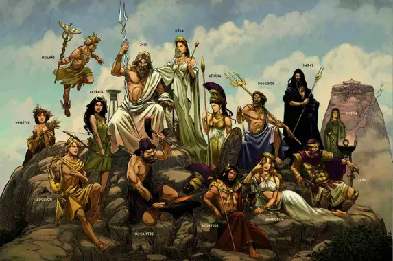

Découverte de la mythologie grecque

Dans la tradition impérative de la mythologie grecque, leurs divinités olympiennes sont les divinités principales du culte.
La mythologie est intérressante sur le point de vue culturel, cela nous fait apprendre diverses histoires, qu'elles soient fictives ou non. Ainsi c'est intérressant également puisqu'on les retrouve dans plusieurs livres.
Sur ce site, vous pourrez découvrir 6 dieux grecs au travers de différentes références littéraires :